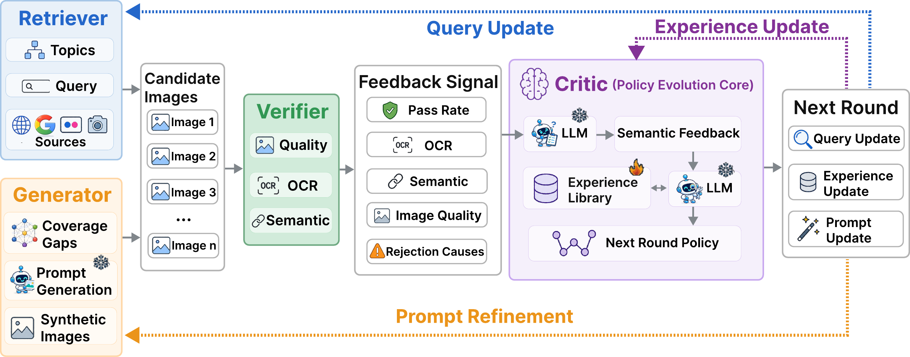
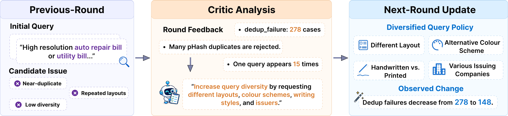
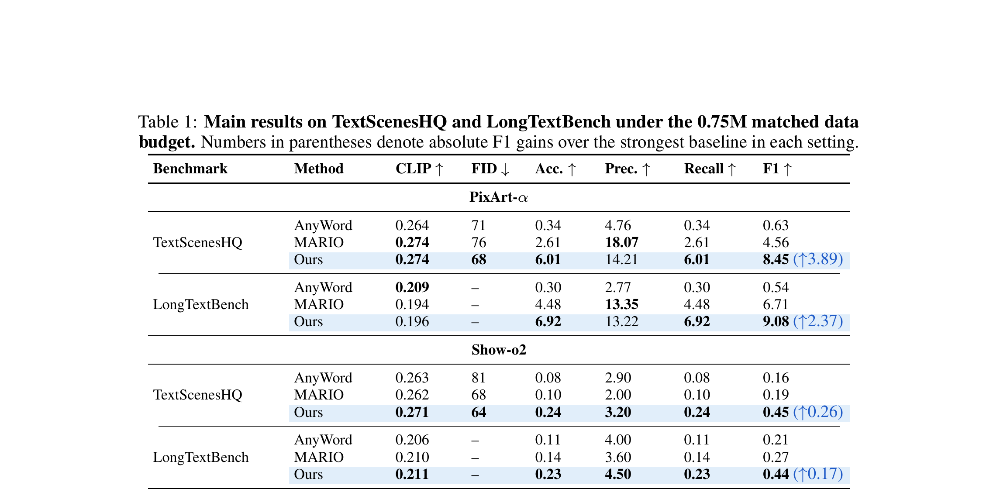

Text-rich image generation is one of the most challenging settings in image generation, since models must simultaneously produce visually realistic images and render legible, semantically aligned, and layout-consistent text. Existing data pipelines usually follow a static crawl–filter–freeze paradigm: they collect candidate samples, filter them once, and freeze the accepted data for training. This design discards useful failure signals, including OCR errors, semantic mismatches, and coverage gaps. As a result, later construction rounds may repeat the same failure modes.
To address these limitations, we propose DataEvolver, a self-evolving multi-agent framework for text-rich image data construction. DataEvolver treats data construction as feedback-driven construction policy evolution. A Retriever collects candidate samples, a Verifier assigns quality scores and rejection causes, a Critic summarizes round-level feedback into semantic feedback, and a Generator completes under-covered regions through targeted synthesis. The updated feedback memory then guides the next construction round.
Experiments on text-rich image generation benchmarks show that DataEvolver produces more useful training data than fixed-dataset baselines under matched data budgets. At the 0.75M scale on PixArt-α, DataEvolver improves OCR-F1 over the strongest baseline by 85.3% on TextScenesHQ and 35.3% on LongTextBench. The improvements are consistent across both benchmarks and also transfer to Show-o2, indicating that the benefit of DataEvolver is not tied to a single downstream generator.

Closed-loop construction. DataEvolver constructs text-rich image data through a closed loop with four agents. At round t, the system is governed by a data construction policy πt = (Qt, Pt, Et), combining a retrieval policy, a generation-prompt policy, and an experience library of high-value feedback from previous rounds.

Example of Critic-guided policy update. Given a duplicate-heavy construction round, the Critic summarizes the failure pattern (near-duplicates, repeated layouts, low diversity) and produces query-diversification guidance for the next round — requesting different layouts, colour schemes, writing styles, and issuers. In this logged case, deduplication failures decrease from 278 to 148 after the update.

Qualitative comparison. Generators fine-tuned on DataEvolver data render text that is more legible, better aligned with the prompt, and more layout-consistent than those trained on fixed-dataset baselines under matched data budgets.

Main results. Under matched data budgets, DataEvolver consistently improves OCR-oriented metrics that directly reflect text rendering quality, while maintaining competitive semantic alignment and visual quality. At the 0.75M scale on PixArt-α, OCR-F1 improves over the strongest baseline by 85.3% on TextScenesHQ and 35.3% on LongTextBench. Removing the Critic or the Generator consistently degrades OCR-F1, validating both feedback-based policy revision and targeted completion. Gains also transfer to Show-o2.
@article{yan2026dataevolver,
title = {DataEvolver: Self-Evolving Multi-Agent Data Construction for Text-Rich Image Generation},
author = {Yan, Siyu and Gao, Yizhen and Wang, Yilin and Mao, Dongxing and Wang, Alex Jinpeng},
journal = {arXiv preprint},
year = {2026},
}